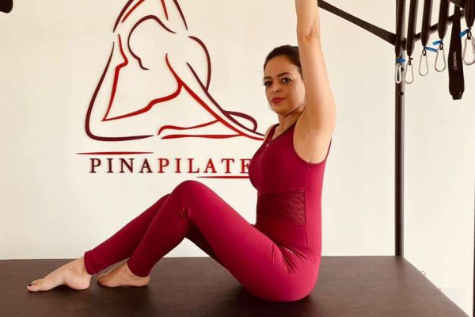

No studio
Escolha aulas individuais ou em grupos de até quatro pessoas, com prática de solo e aparelhos Metalife.
Saiba maisEntre uma pausa e um novo movimento, encontre um tempo só seu.

Equipamentos, acessórios e orientação para uma prática atenta. Aqui, a aula ganha forma a partir de você.
Escolha aulas individuais ou em grupos de até quatro pessoas, com prática de solo e aparelhos Metalife.
Saiba mais
Conheça o formato das aulas online e encontre um horário que combine com sua rotina.
Saiba mais
Pilates ou personal de musculação em residências e condomínios, com opções individuais e em grupo. Consulte a região de atendimento.
Saiba mais
Conheça as opções de SIPAT para empresas e os cursos online oferecidos pelo studio.
Saiba maisPlanos mensais, semestrais e anuais. Consulte valores e disponibilidade com o studio.
O Pilates combina força e flexibilidade, com movimentos controlados e atenção à respiração.

Conheça o nosso jeito de cuidar do movimento.
Agendar aula gratuita